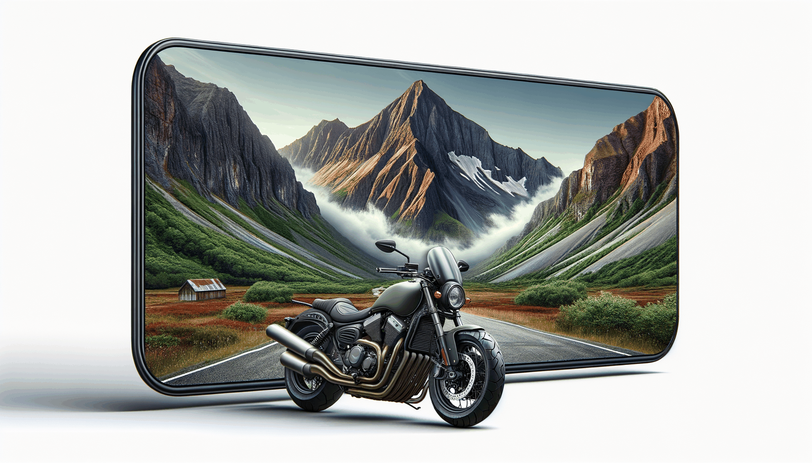

Le Cap Nord, ça va mal finir ! Cercle arctique polaire
Quand la route vers le Cap Nord devient un défi mental et physique.
Lire l'article →Retours d’expérience terrain, voyages moto, bivouac, GPS, pneus, équipement et conseils pratiques : retrouve ici les articles LCDMH classés par univers pour naviguer plus facilement.
Un article principal mis en avant, modifiable chaque semaine sans toucher à toute la page.

Quand la route vers le Cap Nord devient un défi mental et physique.

Le récit d'une étape éprouvante au Cap Nord, entre vent glacial et routes désertes.

Guide pratique pour préparer un road trip moto en Norvège.
Le récit d'une étape éprouvante au Cap Nord.
Guide pratique pour préparer un road trip moto en Norvège.
Voyages, étapes, paysages, préparation et récits de route.
Quand la route vers le Cap Nord devient un défi mental et physique.
Lire l'article →Le récit d'une étape éprouvante au Cap Nord, entre vent glacial et routes désertes.
Lire l'article →
L'arrivée au Geirangerfjord, un moment suspendu entre montagne et mer.
Lire l'article →
Traversée des Alpes du sud sur la Benelli TRK 502, cols et panoramas.
Lire l'article →
Comment préparer sa moto et ses bagages pour un road trip longue distance en Benelli TRK 702.
Lire l'article →
Road trip moto dans les Alpes à la découverte des cols mythiques.
Lire l'article →Quand la route vers le Cap Nord devient un défi mental et physique.
Lire l'article →Le récit d'une étape éprouvante au Cap Nord, entre vent glacial et routes désertes.
Lire l'article →L'arrivée au Geirangerfjord, un moment suspendu entre montagne et mer.
Lire l'article →Traversée des Alpes du sud sur la Benelli TRK 502, cols et panoramas.
Lire l'article →Comment préparer sa moto et ses bagages pour un road trip longue distance en Benelli TRK 702.
Lire l'article →Road trip moto dans les Alpes à la découverte des cols mythiques.
Lire l'article →GPS, pneus, éclairage, smartphone, batterie, bivouac et retours terrain.

Comparatif terrain après 15 000 km sur NT1100 et TRK 702.
Lire l'article →
Test du GPS Aoocci U6 avec navigation offline, TPMS et dashcam intégrée.
Lire l'article →
Test complet de la Perun 3 après 10 000 km et 35 nuits en bivouac.
Lire l'article →
Test complet du sac de couchage Nemo Sonic 0° en conditions réelles de bivouac moto.
Lire l'article →
Test complet de la station portable 100W en conditions réelles de voyage moto.
Lire l'article →
J'ai testé les 4 écrans moto Carpuride. Détection angle mort, TPMS, fixation BM05 : quel modèle choisir ?
Lire l'article →
Comparatif des meilleurs Carpuride pour moto : W702, W903 et alternatives. Mon avis terrain.
Lire l'article →
Komobi City vs Komobi Pro : lequel choisir pour sécuriser ta moto ?
Lire l'article →
Test du smartphone renforcé Blackview Xplore X1 après des milliers de km sous la pluie et le froid.
Lire l'article →
Comparatif et retour terrain sur le Blackview X1 : pluie, chocs, froid — il résiste à tout.
Lire l'article →Bridgestone T33 vs Michelin Road 6 : mon comparatif après des milliers de kilomètres.
Lire l'article →
26 000 km avec la Honda NT1100, il est temps de faire un vrai bilan.
Lire l'article →Comparatif terrain après 15 000 km sur NT1100 et TRK 702.
Lire l'article →Test du GPS Aoocci U6 avec navigation offline, TPMS et dashcam intégrée.
Lire l'article →Test complet de la Perun 3 après 10 000 km et 35 nuits en bivouac.
Lire l'article →Test complet du sac de couchage Nemo Sonic 0° en conditions réelles de bivouac moto.
Lire l'article →Test complet de la station portable 100W en conditions réelles de voyage moto.
Lire l'article →J'ai testé les 4 écrans moto Carpuride. Détection angle mort, TPMS, fixation BM05 : quel modèle choisir ?
Lire l'article →Comparatif des meilleurs Carpuride pour moto : W702, W903 et alternatives. Mon avis terrain.
Lire l'article →Komobi City vs Komobi Pro : lequel choisir pour sécuriser ta moto ?
Lire l'article →Test du smartphone renforcé Blackview Xplore X1 après des milliers de km sous la pluie et le froid.
Lire l'article →Comparatif et retour terrain sur le Blackview X1 : pluie, chocs, froid — il résiste à tout.
Lire l'article →Bridgestone T33 vs Michelin Road 6 : mon comparatif après des milliers de kilomètres.
Lire l'article →26 000 km avec la Honda NT1100, il est temps de faire un vrai bilan.
Lire l'article →Conseils utiles, préparation voyage, entretien et sujets evergreen.
Guide pratique pour préparer un road trip moto en Norvège.
Lire l'article →
Le récit complet de mon voyage en solo au Cap Nord. Ce que j'ai dépensé jour par jour.
Lire l'article →Tarifs ferries, bivouac légal, carburant, nourriture. 2 300–2 500€ pour 23 jours — chiffres réels.
Lire l'article →
Tout comprendre sur les radars moto : fonctionnement, détection et conseils pratiques.
Lire l'article →
Comment nettoyer sa bulle sans la rayer — ma méthode testée.
Lire l'article →Guide pratique pour préparer un road trip moto en Norvège.
Lire l'article →Le récit complet de mon voyage en solo au Cap Nord. Ce que j'ai dépensé jour par jour.
Lire l'article →Tarifs ferries, bivouac légal, carburant, nourriture. 2 300–2 500€ pour 23 jours — chiffres réels.
Lire l'article →Tout comprendre sur les radars moto : fonctionnement, détection et conseils pratiques.
Lire l'article →Comment nettoyer sa bulle sans la rayer — ma méthode testée.
Lire l'article →Bilans terrain sur la Honda NT1100 et la Benelli TRK 702 après des milliers de kilomètres.

25 000 km en Honda NT1100 — confort, consommation, entretien, points forts et limites. Le bilan terrain complet.
Lire l'article →La TRK 702 sur 15 000 km de road trip Annecy–Cappadoce. Moteur simple, coût entretien 4 cts/km.
Lire l'article →25 000 km en Honda NT1100 — confort, consommation, entretien, points forts et limites. Le bilan terrain complet.
Lire l'article →La TRK 702 sur 15 000 km de road trip Annecy–Cappadoce. Moteur simple, coût entretien 4 cts/km. Comparatif NT1100.
Lire l'article →Setup caméra, matériel de tournage et méthodes pour filmer ses road trips.
Setup caméra complet pour filmer un road trip moto : 2 GoPros, Osmo Pocket 3, DJI Mini 4 Pro, Fujifilm XS10. Tout le matériel expliqué.
Lire l'article →